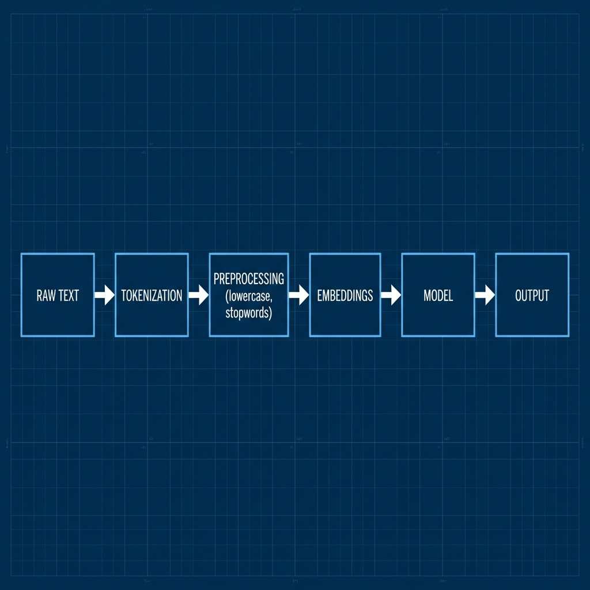
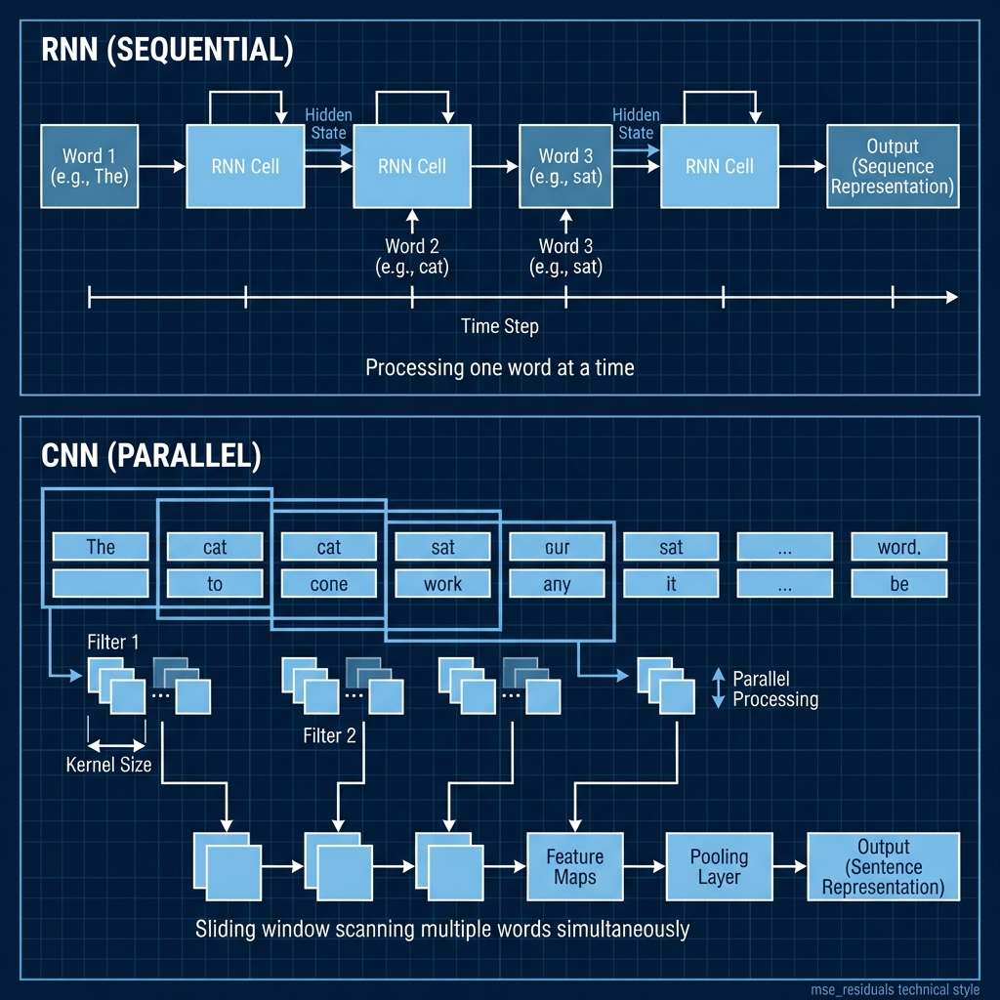
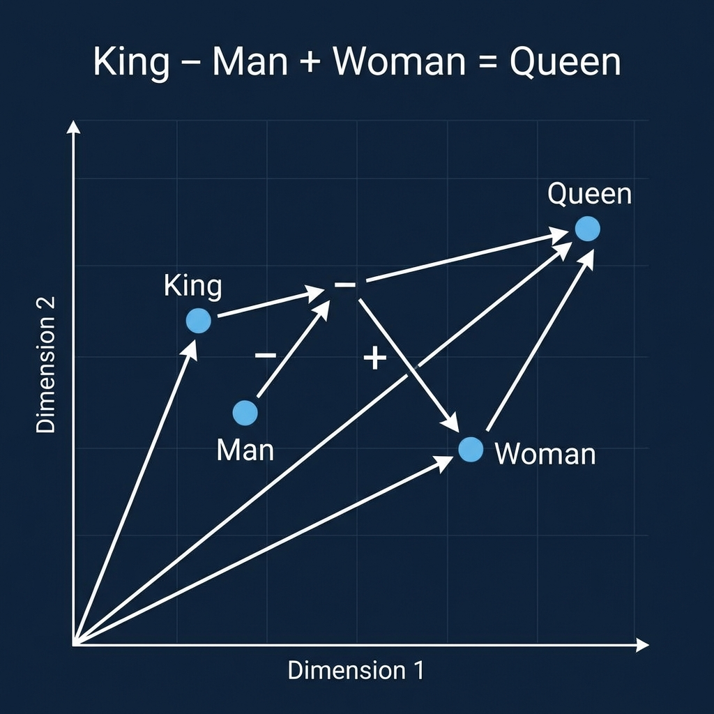

Natural Language Processing (NLP)
Course: Computer Systems Engineering
Module: Artificial Intelligence (AI)
Topic: Text Classification & Word Embeddings
Estimated Reading Time: 35 Minutes
By the end of this chapter, you will be able to:
1. Explain the challenge of representing discrete text in continuous vector space.
2. Differentiate between Bag-of-Words and Word Embeddings.
3. Describe how 1D Convolutions can extract features from text.
4. Implement a simple Text Classifier using PyTorch
EmbeddingBag.
Until now, we have dealt with numbers (Regression) and images (Pixels are just grids of numbers). Text is different. It is messy, discrete, and variable in length. Computers do not inherently understand words. To teach an AI to read, we must first translate language into mathematics. This week introduces Natural Language Processing (NLP). We will cover the pipeline of Tokenization, Word Embeddings, and finally, creating a model that can "read" a sentence and understand its sentiment.
1. From Words to Numbers
The fundamental challenge of NLP is representation. How do you feed "I love AI" into a matrix multiplication?
1.1 Tokenization
The first step is fragmentation. We cannot process a whole book at once, so we break it down into atomic units called Tokens. In a simple model, these might be individual words ("I", "love", "AI"). In more advanced models, they might be parts of words or characters. This converts a stream of text into a list of discrete items.
Example:
Text: "I love Artificial Intelligence"
Tokens: ["i", "love", "artificial", "intelligence"]
After preprocessing: ["love", "artificial", "intelligence"]
1.2 Preprocessing: Cleaning the Mess
Before we even look at numbers, we must clean the text. Real-world data is dirty.
-
Lowercasing: "Apple" and "apple" should be the same token.
-
Stopword Removal: Words like "the", "and", "is" appear frequently but carry little meaning. We often remove them to reduce noise.
-
Stemming/Lemmatization: We chop words to their root. "Running", "Ran", and "Run" all become "run". This drastically reduces the size of our vocabulary.
1.3 Vocabulary (One-Hot Encoding)
The simplest way to turn tokens into numbers is to build a dictionary (Vocabulary) of every word we know.
If our vocabulary has 10,000 words, "Apple" might be word #5, and "Zebra" might be #9999.
However, representing this mathematically is tricky. Using a simple integer implies that "Zebra" is
greater than "Apple", which makes no sense. The traditional fix is One-Hot Encoding,
creating a vector of zeros with a single '1' at the word's index. The problem is efficiency: if you have
50,000 words, every single word requires a vector of size 50,000. It is sparse, wasteful, and tells us
nothing about the relationship between words.

Figure 1: The NLP pipeline transforms raw text through tokenization, preprocessing, embeddings, and model processing to generate output.
2. The Evolution of NLP Models
2.1 The Dark Ages: RNNs and LSTMs
Before Transformers (which we will explore next week), the reigning architecture was the Recurrent Neural Network (RNN).
-
The Idea: RNNs process text sequentially, one word at a time, keeping a "hidden state" (memory) of what they have seen so far.
-
The Failure: They suffered terribly from the Vanishing Gradient problem. By the time the model reached the end of a long paragraph, it had forgotten the beginning. Even improved versions like LSTMs (Long Short-Term Memory) struggled with long-range dependencies and were incredibly slow to train because they could not be parallelized.

Figure 2: Recurrent networks process sequentially (Top), while CNNs process in parallel windows (Bottom).
2.2 Word Embeddings (The Solution)
Modern Deep Learning solves the representation problem with Embeddings (like Word2Vec or
GloVe).
Instead of a massive, empty One-Hot vector, we represent every word as a smaller, dense vector of
continuous numbers (e.g., size 300).
How is this learned?
The intuition comes from linguistics: "You shall know a word by the company it keeps" (Firth,
1957).
The model looks at a Context Window. If the word "King" frequently appears near
"Palace", "Crown", and "Man", and "Queen" appears near "Palace", "Crown", and "Woman", the model learns
that "King" and "Queen" are geometrically close in vector space.
Crucially, this allows for Semantic Arithmetic:
$$Vector(King) - Vector(Man) + Vector(Woman) \approx Vector(Queen)$$

Figure 3: The famous "King - Man + Woman = Queen" analogy visualized in vector space.
3. TextCNN
We previously used Convolutional Neural Networks (CNNs) for images, but they are surprisingly effective
for text as well.
In an image, a 2D filter slides over pixels to detect edges. In text, we treat a sentence effectively as
a 1D image—a sequence of word vectors. A 1D Convolution slides a filter over a window
of 2, 3, or 4 words at a time.
This allows the model to detect N-grams, or local patterns of words. For example, a
filter might learn to recognize the phrase "not good" which flips the sentiment of a sentence, much like
an edge detector finds a boundary in an image.
4. Lab Preview: Sentiment Analysis
In this week's lab (Experiment 1), we will build a classic sentiment analysis model.
1. Data Preparation: We will create a small dataset of positive and negative
reviews.
2. Vocabulary: We will map our words to unique IDs.
3. Model: We will build a TextClassifier in PyTorch that uses an
nn.EmbeddingBag layer followed by a Linear layer.
nn.EmbeddingBag
efficiently averages word embeddings for variable-length sentences without needing padding, making
it fast and memory-efficient for text classification. This simple architecture is surprisingly
powerful for determining if a review is Positive or Negative.
5. Summary
We learned that NLP relies on converting discrete text into continuous Embeddings. While One-Hot Encoding provided a starting point, it was too sparse for deep learning. Finally, we saw that CNNs are not just for eyes; their ability to detect local patterns makes them excellent readers of text as well.
Next week, we look at Foundation Models (LLMs like ChatGPT) and how to deploy them.
Test Your Knowledge
Ready to check your understanding of this week's material? Take the interactive quiz now!
Start Quiz